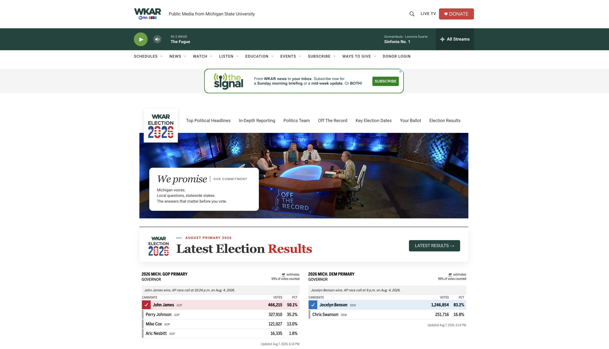
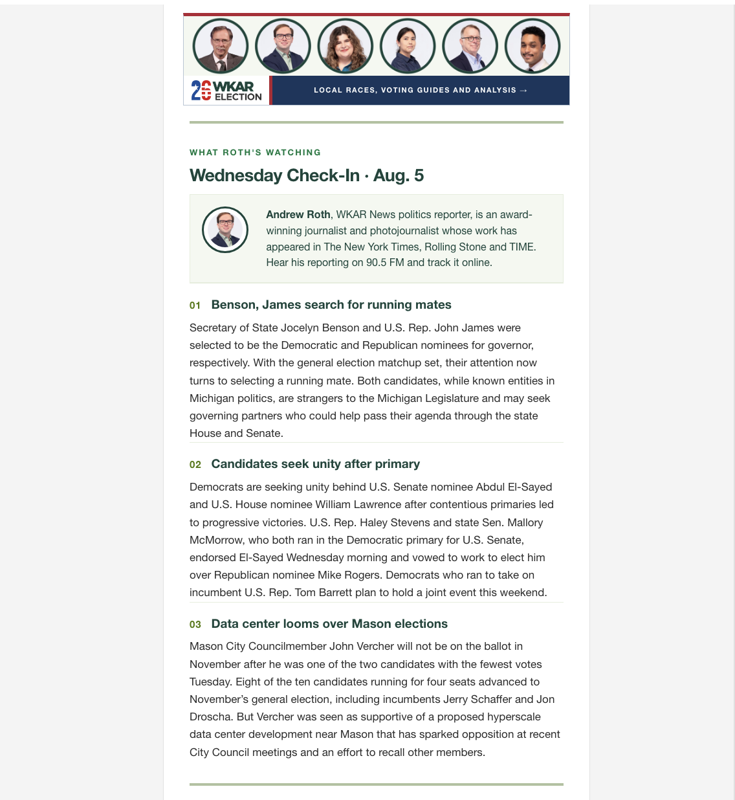

From the WKAR News 2026 strategic plan
Election 2026
WKAR had no politics destination. Building one was in the strategic plan I wrote for 2026. I designed the structure, the sections and the editorial promise, handed it off to be fully executed, and recruited a full-time political reporter to anchor the coverage.
It launched ahead of Michigan's August primary and now carries results, in-depth reporting, voter tools and the state's longest-running political program.

The Election 2026 identity as rolled out across the site, the newsletters and on-air. The brand system was produced for launch; the strategy and the product behind it were mine.

The promise, on the page
Michigan voices. Local questions, statewide stakes. The answers that matter before you vote.
That is not marketing copy. It is an editorial standard published where the audience can hold us to it, and it is my philosophy shipped as product.
In-depth reporting
No ten-second soundbites. Hosts ask the hard questions and give candidates time to answer.
Beyond the Capitol
The small towns and outlying counties where the stories are just as consequential and far less told.
Tools to take action
Coverage paired with resources to understand a ballot and reach a representative.
Independent. Always.
No advertisers, no corporate owners, no political agenda.
The talent argument, again
Meet the team covering your election
Six journalists, named and pictured, before a single headline. The politics team is the front door, not a staff page buried three clicks down.

Mid-Michigan politics team and statewide correspondents · wkar.org/election-2026
The build
A destination, not a tag page
Top political headlines
A lead well with bylines and listen times on every item. Radio and digital treated as one product.
In-depth reporting
An on-demand library of long-form reporting from Saliby, Begay, Roth and WKAR News contributors.
Off the Record: Rewind
Michigan's longest-running political program, hosted by Tim Skubick, repackaged for WKAR-TV and YouTube.
Key dates & voter tools
Registration deadlines, early voting, sample ballots, polling places, voter ID. Service journalism as a first-class section.
Brand into channel
The same brand runs through the newsletter
The Election 2026 banner and politics-team strip appear inside The Signal and The Signal+ every week, driving readers from inbox to site. One identity, three channels, and a plan for how they feed each other.
Behind it: the 2026 Politics Plan and the Election 2026 Promo Plan, written first, then executed.
